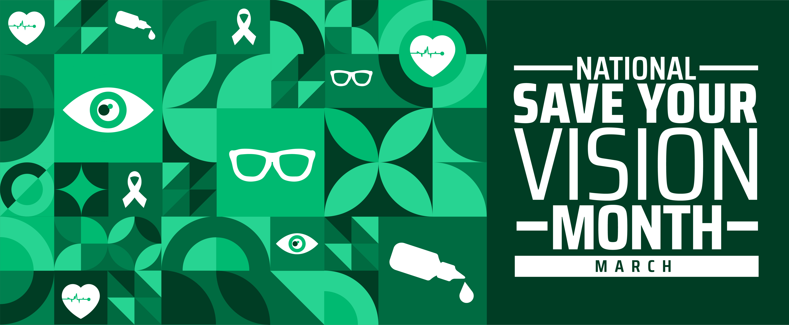

20% off your first eye examination
Book your first appointment through our contact page to claim your discount.
Vcare Opticals has supported the community for over 25 years with trusted, professional and friendly eye care. We provide services for children, adults, families, and elderly patients, helping every visitor protect their long-term vision and eye health.

We support children needing regular vision checks, adults managing screen use and daily eye strain, and older patients requiring ongoing eye-health monitoring.
Our clinic uses modern diagnostic tools to help identify potential issues early and provide clearer information about your eye health.
Our website helps patients quickly learn about services, find helpful articles, and book an appointment online.
Book your first appointment through our contact page to claim your discount.

Enjoy 10% off on your Annual Eye Checkup until May 31st.

Learn practical ways to reduce eye strain and protect your vision throughout the year.
Our clinic provides comprehensive eye-care services, prescription support, diagnostic screening, and eyewear options for different ages and lifestyles.
General vision checks and prescription updates for glasses or contact lenses.
Support for growing eyes, school vision needs, and family-friendly checkups.
Advice and fitting support to help you find comfortable contact lenses.
Assessment and care options to improve comfort and reduce irritation.
Advanced screening for glaucoma, cataracts, and other ongoing eye-health concerns.
Regular monitoring and personalised care for age-related vision and eye-health changes.
A simple, structured checkup designed to support long-term vision and detect potential issues early.

Quick reads to support healthier vision habits for students, workers, families, and older adults.
Use our booking form to arrange your visit, ask about a service, or enquire about our special offers. Our team is ready to support both new and existing patients.